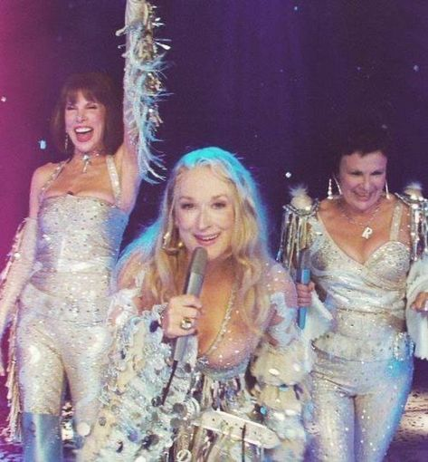

Mamma mia films
MAMMA MIA
Mamma mia is een musical film die Sophie volgt in de week van haar bruiloft, Sophie groeit op zonder vader in haar leven, maar als ze het oude dagboek van haar moeder vind nodigt ze haar 3 mogelijke vaders uit zonder haar moeder hier over te vertellen. Sophie denkt dat ze haar vader onmiddellijk zal herkennen, dit was echter niet zo makkelijk. Donna (moeder van Sophie) heeft een eenvoudig hotel op het eiland en zong vroeger met haar vriendinnen Rosie Mulligan en Tanya Wilkinson , die ook in Kalokairi arriveren voor de bruiloft, in hun band Donna and the Dynamos. Wanneer Donna haar voormalige drie geliefden samen in haar hotel ziet, raakt ze gestrest en verward door de situatie, Sophie is vastberaden om er achter te komen wie van deze mannen nou echt haar vader is en met haar het pad kan aflopen op haar bruiloft. Maar zal deze vastberadenheid haar huwelijk in gevaar brengen?
MAMMA MIA HERE WE GO AGAIN
In een flashback naar het jaar 1979 studeert een jonge Donna Sheridan samen met Rosie en Tanya af aan Oxford's New College en droomt ze van een Grieks eiland genaamd Kalokairi. Donna was de constante afwezigheid van haar moeder beu en vastbesloten haar leven te besteden aan het maken van herinneringen. Ze besloot naar Kalokairi te reizen om haar bestemming te vinden. In Parijs ontmoet Donna de lieve maar onhandige Harry Bright, die op slag verliefd op haar wordt. Ze brengen de nacht samen door, maar Donna vertrekt kort daarna naar Griekenland. Ze mist haar boot naar Kalokairi, maar krijgt van Bill Anderson een ritje aangeboden in zijn jacht, en de twee dansen en flirten. Zonder dat Donna het wist, is Harry haar gevolgd naar Griekenland; Hij komt echter te laat en ziet droevig de boot in de verte wegvaren. Donna verkent een verlaten boerderij die uiteindelijk het hotel zou worden. Er breekt dan een zware storm uit en Donna ontdekt een gevangen paard en kalmeert het met de hulp van Sam Carmichael. Donna en Sam genoten van een wervelende romance, maar het eindigde slecht toen Donna ontdekte dat Sam verloofd was met een andere vrouw, Lorraine. Met een gebroken hart maakt Donna het uit met hem en kijkt ze in tranen toe hoe hij het eiland verlaat . Na het vertrek van Sam krijgt Donna bezoek van Tanya en Rosie, die haar opvrolijken door met haar te zingen als Donna en de Dynamos. Bill keert terug naar het eiland en Donna gaat met hem mee op zijn boot. Terwijl ze weg zijn, keert Sam terug, nadat hij zijn verloving met Donna heeft beëindigd, maar hij is bedroefd om te horen dat ze bij een andere man is. Donna ontdekt dat ze zwanger is, maar heeft geen idee wie de vader van de baby is...